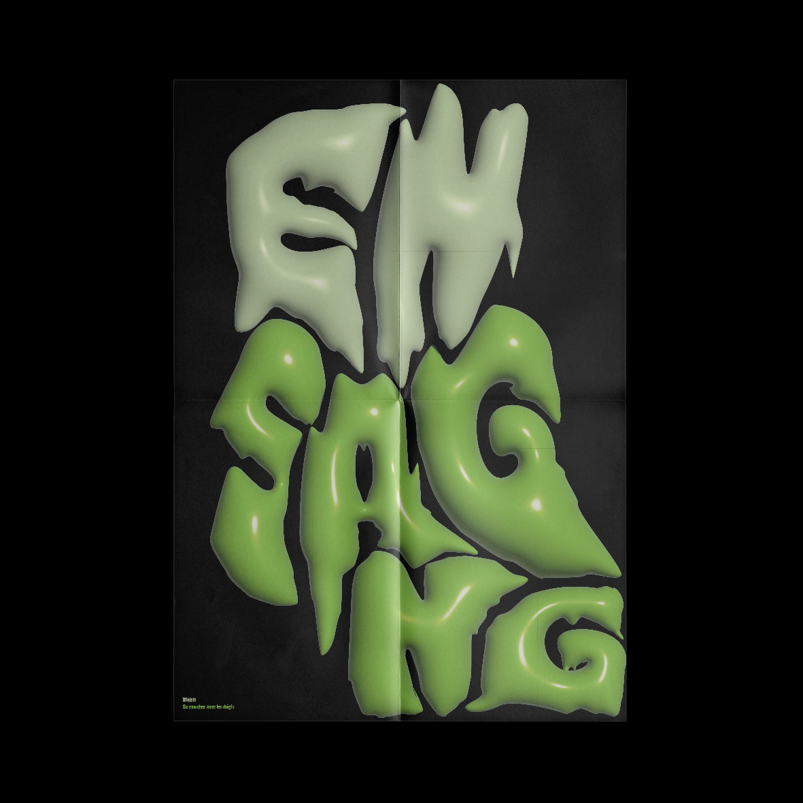

4 affiches typographiques à partir d'un mot n'existant pas dans la langue française
40 x 60 cm
Engsang (malais) : Se moucher avec les doigts
Supplément au dictionnaire enfantin - En référence à l’affiche du Supplément au dictionnaire italien de Bruno Munari, cette affiche se concentre sur l’acte de se moucher avec les doigts en cherchant à trouver des gestes de main afin de permettre cet acte. L’idée est de s’adresser aux enfants, qui sont ceux qui ont tendance à le faire, et d’en faire une sorte d’affiche pédagogique avec humour. D’ailleurs, c’est un des premiers gestes appris aux enfants pour qu’ils puissent le faire seuls, il s’agit très rarement d’un geste inné.
Morveux - Cette affiche se concentre sur la texture de la morve, le résultat de l’action de se moucher avec les doigts, en modelant les lettres du mot afin d’en créer des formes coulantes, visqueuses et morveuses telles un monstre. L’idée est de créer un mouvement dégoulinant avec les lettres qui s’étalent et s’écrasent en bas de l’affiche. L’esthétique est volontairement enfantine puisque ce sont eux qui ont tendance à se moucher avec leurs doigts. La colorimétrie fait référence à l’aspect dégoûtant d’une figure de monstre pour enfant, comme celui dans SOS Fantômes fait de slime vert, qui se forme et se déforme.
Sacrément gonflé - Cette affiche se concentre sur l’aspect enfantin du geste de se moucher avec les doigts. Elle reprend les ballons d’hélium, souvent présents en fête foraine, avec des couleurs vives qui rappellent l’enfance. Elle s’adresse ainsi à tout le monde, compréhensible par toutes et tous. L’esthétique est volontairement très colorée et vive. La définition et l’origine du mot sont placées de façon à rappeler le fil par lequel on tient le ballon d’hélium.
Letsgo - Se moucher avec les doigts est un acte principalement fait par les enfants. Il s’agit ainsi de trouver des formes et des références communes, qu’ils comprennent immédiatement, ainsi que les adultes. En référence aux jeux de construction pour enfants de Paul Cox, ici, l’affiche convoque un des jeux les plus emblématiques : les legos. Il serait possible de décliner cette idée avec d’autres jeux comme les playmobils, les kapla, les mikados ou bien encore les jeux de société comme le monopoly par exemple. Dans cette affiche, les legos offrent des couleurs et des formes colorées et géométriques permettant de créer une police de caractères avec celles-ci.